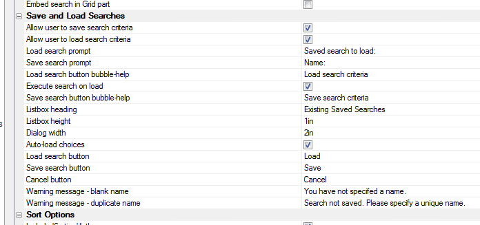

Grid Component - Search Part - Save and Load Search Criteria
You can now use the new Repository feature in V11 to save search criteria to the repository and load searches from the repository.Watch Video - Part 1
Watch Video - Part 2
To turn on the feature, set the 'Allows user to save search criteria' and 'Allow user to load search criteria' properties.
Before using this feature, you must first configure the Repository by going to the Project Properties dialog on the Web Projects Control Panel.
